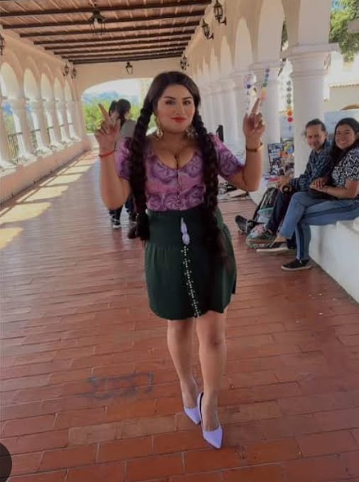
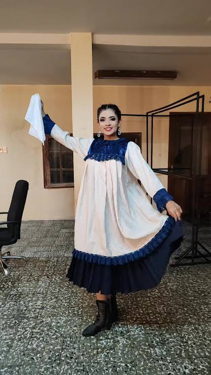
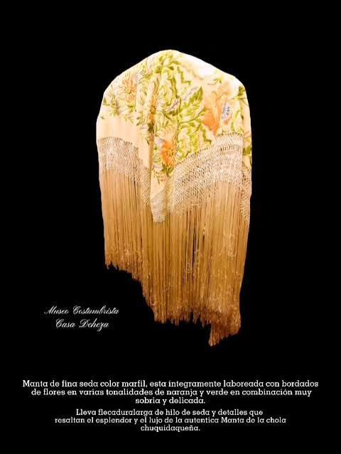
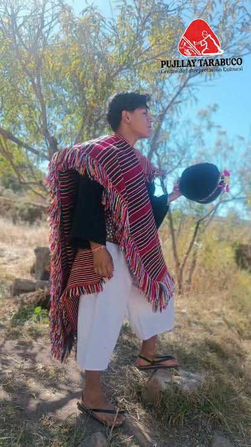
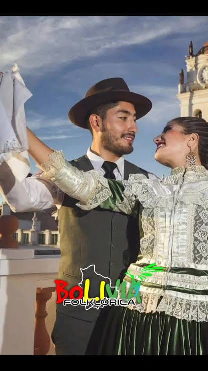

Vestimentas Tradicionales de Chuquisaca
Conoce las prendas, los tejidos y la identidad cultural de sus comunidades.
Chuquisaca tiene una gran diversidad cultural, especialmente en sus comunidades quechuas y en las poblaciones de los valles. Sus vestimentas tradicionales cambian según el municipio, la comunidad y la ocasión. En ellas se encuentran polleras, blusas bordadas, mantas, aguayos, ponchos y sombreros. Los tejidos y diseños reflejan conocimientos artesanales, costumbres familiares y una identidad cultural que se mantiene viva en las actividades cotidianas y en las celebraciones.

1. Pollera
Es una falda amplia que forma parte de la vestimenta de mujeres de distintas comunidades. Sus colores, largos y adornos varían según la región.

2. Blusa
Es una prenda femenina que puede presentar bordados, colores y diseños tradicionales.

3. Manta
Se coloca sobre los hombros para abrigarse y completar la vestimenta. Puede tener tejidos, flecos o bordados.

4. Aguayo
Es un tejido andino rectangular que se utiliza para cargar productos, transportar objetos o llevar niños.

5. Poncho
Es una prenda de abrigo utilizada en distintas comunidades, especialmente por los hombres. Puede elaborarse con lana.

6. Sombrero
Se utiliza para protegerse del sol y complementar la vestimenta tradicional.